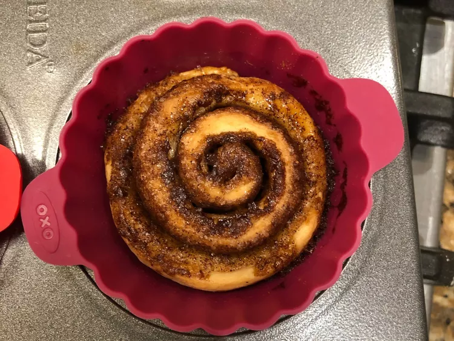

Cinnamon Rolls

Description
Quick and easy cinnamon rolls from scratch, with no yeast, proofing, or kneading necessary!
Satisfy your sweet tooth first thing in the morning with these shortcut cinnamon rolls. There's no yeast required, so it's perfect for beginner bakers or anyone who is short on time (or patience).
Ingredient
- 2 cups all-purpose flour, or more as needed
- 2 tablespoons white sugar
- 2 teaspoons baking powder
- 1 teaspoon salt
- 3 tablespoons butter, softened (Optional)
- ¾ cup milk
- 1 egg
Steps
- Preheat oven to 400 degrees F (200 degrees C). Brush a 9-inch square baking dish with 2 tablespoons melted butter.
- Whisk flour, 2 tablespoons white sugar, baking powder, and salt together in a large bowl. Work 3 tablespoons softened butter into flour mixture using your hands. Beat milk and egg together in another bowl; pour into flour-butter mixture and stir with a rubber spatula until a soft dough forms.
- Turn dough out onto a floured work surface and roll dough into a 1/4-inch thick rectangle. Brush surface of dough with 2 tablespoons melted butter.
- Whisk 1/2 cup white sugar, brown sugar, and cinnamon together in a small bowl. Sprinkle 1/2 of the cinnamon sugar mixture in the bottom of the prepared baking dish. Sprinkle remaining cinnamon sugar over butter-brushed dough. Roll dough around filling to form a log; cut log into 18 rolls and place rolls in the prepared baking dish.
- Bake in the preheated oven until rolls are set, 20 to 25 minutes.
- Beat confectioners' sugar, cream cheese, 1/4 cup softened butter, and vanilla extract together in a bowl until frosting is smooth. Top hot cinnamon rolls with cream cheese frosting.